ไม้ยืนต้น
กระถินณรงค์
กระถินพิมาน
กระถินณรงค์เงิน
กระทิง
กระดังงาไทย
กระทุ่มนา
กุ่มน้ำ
กุ่มบก
กันเกรา
กาฬพฤกษ์
กัลปพฤกษ์

แก้วเจ้าจอม
แคแสด
แคฝรั่ง
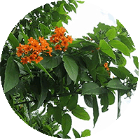
คอเดีย
จำปา
จำปี
จิกน้ำ
จามจุรี
จัน-อิน
ชงโค

ชมพูพันธุ์ทิพย์
ตะลิงปริง

ตะขบไทย
ตะแบกนา
แต้ว
ทองกวาว
ทองหลางลาย
นนทรี
นิโครธ
บุนนาค
ประดู่แดง
ประดู่อินเดีย
ปีป
ปีปทอง
ฝ้ายคำซ้อน
พยุง
พยอม
พิกุล

พี้จัน
พฤกษ์
มะตาด
มะกอกน้ำ
มะขาม
มะพูด
มะหาด
มะฮอกกานีใบใหญ่
มะฮอกกานีใบเล็ก
โมกมัน
.gif)
ราชพฤกษ์ (คูน)
ลั่นทมแดง
ลั่นทมขาว
ลำดวน
ลูกปืนใหญ่
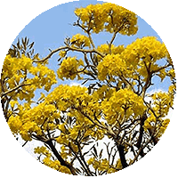
เหลืองอินเดีย
เตีนเป็ดน้ำ
ตีนเป็ด
ศรีตรัง
สุพรรณิการ์
เสลา
เสี้ยวดอกขาว
สารภี
ยางอินเดีย
ไทรย้อยใบแหลม

ไทรจีน
ไทรสามเหลี่ยม

ไทรเรกูล่า
หลิว

หางนกยูงฝรั่ง
อินทนินบก
ไม้พุ่ม
กรรณิการ์
กระถินหางกระจอก
กุหลาบ
กระดังงาสงขลา
กาหลง
ชาฮกเกี้ยน(ชาปัตตาเวีย)
แก้ว
โกสน
เข็มม่วง
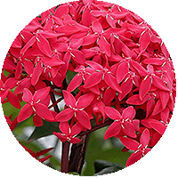
เข็มเศรษฐี
เข็มแดง
เข็มญี่ปุ่น
เข็มขาว
เข็มอุณากรรณ
เข็มเหลือง
ไข่ดาว

คริสต์มาสซ้อน
โคลงเคลง

ตันหยง
ชบา
ชบาจีน
ชบาหนู
ช่อม่วงหรือเทียนหยด
ชุมเห็ดเทศ
ช้องนาง
ช้องแมว
ชวนชม
ดอนย่า
ทองพันชั่ง
ทรงบาดาล
เทียนกิ่ง
ทับทิมหนู
ไทรยอดทอง
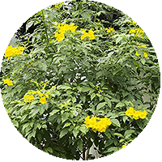
ทองอุไร
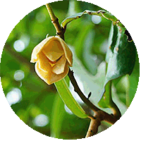
นมแมว
นมสวรรค์
บานเช้าเหลือง
บานเช้า
บัวสวรรค์
ประทัดฟิลิปปินส์
ประทัดจีน
ประยงค์
แปรงล้างขวด
ผกากรอง
.gif)
พุดฝรั่ง (พุดลา)
พู่ชมพู
พู่หมวก
พู่เรือหงษ์
พุดตาล
พุดซ้อน
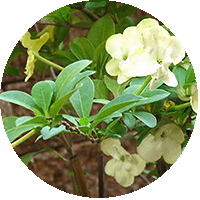
พุดตะแคง
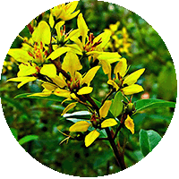
พวงทองต้น
พวงแสดต้น
พยับหมอก
มะเขือนมนาง
มะลิซ้อน-ลา
มุจลินทร์
โมกบ้าน
ยี่โถ
ยี่เข่ง
ยี่หุบ
ราตรี
ราตรีสีทอง
รำเพย
รองผึ้ง
.gif)
รัก (ดอกรัก)
ราชาวดี
รัตมา
ลำโพง
หลิวไต้หวัน
เล็บครุฑา
ส้านชะวา
แสงจันทร์

ข่อย
หางนกยูงไทย
หางกระรอกแดง
หูปลาช่อน
อังกาบ
.gif)
ออชน่า (มิกกี้เม้า)
ไฮแดรนเยีย
ปาร์ม และ ปรง
จั๋งไทย
จั๋งญี่ปุ่น
ตาลแดง
ตาลน้ำเงิน
ปาล์มจีน
ปาล์มจีบ
ปาล์มขวด
ปาล์มบังสูรย์
ปาล์มแชมเปญ
ปาล์มเจ้าเมืองตัง
ปาล์มหนวด
ปาล์มพัด
ปาล์มน้ำมัน
ปาล์มสามเหลี่ยม
ปาล์มไผ่
ปาล์มหางปลา
หมากเหลือง
หมากเขียว
หมากงาช้าง
หมากนวล
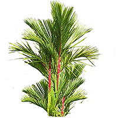
หมากแดง
สิบสองปันนา
อินทผาลัม
ปลงไทย
ปลงญี่ปุ่น
ปลงเม็กซิกัน
ไดอูน
เอนเซบพาโตส
สนประดับ
สนสองใบ
สนสามใบ
สนฉัตร
สนทะเล
สนประดิพัทฐ์
สนข้าวเม่า
สนอริโซนา
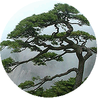
สนจีน
สนดินสอเขียว
สนแผง
สนสองใบ
สนแผงทอง
สนข้าวเปลือกต่าง
สนเลื้อยญี่ปุ่น

สนสาหร่าย
สนสีฟ้าเลื้อย
สนแผงนานา
พญามะขามป้อม
สนญี่ปุ่น
ไม้อวบน้ำ
อกาเว่
ป่านศรนารายณ์
เฟอร์เครีย
ต้นหัวโต
กุหลาบหิน
เข็มกุดั่น
กระบองเพชร

กุหลาบพวงคราม
พระยาไร้ใบ
เขียวสลวย
โป้ยเซียน
ม้าลาย
ลิ้นมังกร
ว่านงาช้าง
ใบไม้สวยงาม
ปุยเมฆ
มรกตดำ
มรกตแดง
พิโลกอ

พิโลหลังแดง
พลูฉีกด่าง
พลูฉลุ

ไผ่ฟิลิปปินส์
ราชินีหินอ่อน
หัวใจแนบ
ทองไหลมา
ออมเงิน-ออมทอง
หน้าวัวใบ
แก้วหน้าม้า่
กระดาษด่าง
เปเปอร์โรเมีย(ลายแตงโม)
เปเปอร์โรเมีย(ด่าง)
บอนสี

วาสนาเขียว-ธรรมดา
ดราซีน่าประกายเงิน
จันทผา
วาสนามังกรทอง
เข็มสามสี

รวงทอง
หมากผู้หมากเมีย

เพชรชมพู
เพชรไพรินทร์
เพชรสายรุ้ง
เขียวหมื่นปี
โพธิบัลลังก์
เทาเงิน

กาบหยก
เสือพราน
โพธิเงินลาย
กวักทองคำ
สาวน้อยประแป้ง
กวักมรกต
นกกระทุมขาว
กวักเงินใหญ่
ช้างเผือก
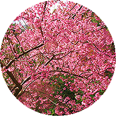
เสือโคร่ง
รูดอล์ฟ
สโนดรอป
อโมน่า
คล้า - สาคู
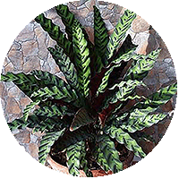
กาเหว่าลาย
ม้าลาย
แววมายุรา
เสน่ห์ขุนแผน
เสือรองนอน(เทพสุดา)
เทวมานัส
กล้วย - กล้วยเทียม
กล้วยบัว
กล้วยร้อยหวี
กล้วยพัด
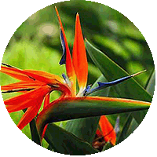
ปักษาสวรรค์
ก้ามกุ้ง(ชูมาลัย)
ก้ามกุ้ง(ชูบังอร)
สร้อยคัทลี
พุทธรักษา
พลับพลึง
เฟริน
ปริกหางกระรอก
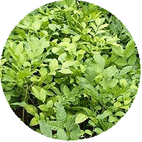
โปร่งฟ้า
ปริก
เฟินก้านดำ
เฟินขกนก
เฟินข้าหลวง
เฟินชายผ้าสีดา
เฟินใบมะขาม
เฟินเกล็ดหอย
เฟินก้างปลา
เฟินทอง
เฟินเงิน

เฟินช้องนางคลี่
หางนกหว้า
เฟินบอสตัน
เฟินชายกระโปรง
เฟินปีกแมงทับ
เฟินใบกลีบ
เฟินต้น
พืชคลุมดิน
กาบหอยแครง
ก้ามปูหลุด

กระดุมทองเลื้อย
คาดตะกั่ว
คาตทับทิม
ริบบิ้นดำ
เบญจรงค์
แมลงสาบ
ผกากรองเหลือง
ผกากรองม่วงเลื้อย
ผักโขมแดง
ผักเป็ดแดง
การะเกด
พรมกำมะหยี่
แพงพวย
ฤาษีผสม
แพรเซี่ยงไฮ้
ซุ้มกระต่าย
เศรษฐีเรือนนอก-ใน
หนวดปลาดุก
หัวใจม่วง
หญ้าด่าง
แอหนัง
ไม้ดอกล้มลุก
กล็อกซิเนีย
บานเย็น
บานชื่น
แซลเวีย
ปากนกกระเรียน
แสงอรุณ
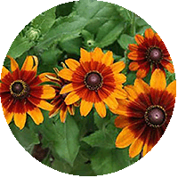
เดือนฉาย
ดาวเรือง
ดาวกระจาย
รักเร่
พิกุลทอง
ทานตะวัน
ฟลอกซ์
พิทูเนีย
หงอนไก่
ไผ่
ไผ่เพ็ก
ไผ่เหลือง
ไผ่เลี้ยง
ไผ่ทอง
ไผ่น้ำเต้า
ไผ่รวก
ไผ่รวกดำ